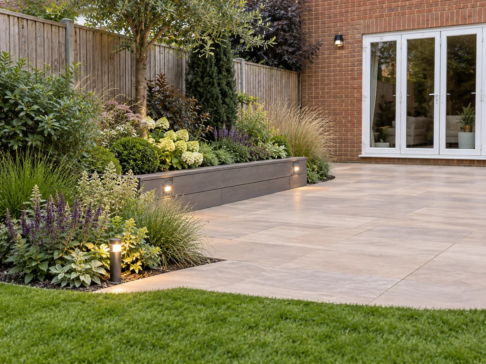

July in the garden: helping it through the heat
A practical monthly guide for gardens across Surrey, Sussex and Hampshire.
July usually changes the job list. Instead of trying to make everything grow, the priority becomes helping the garden cope with summer.
Dry periods are common across Surrey, Sussex and Hampshire, especially on lighter soils. Newly planted trees, hedges, shrubs and perennials should be watched carefully.
Water deeply rather than little and often, ideally in the morning or evening. Pots and containers can dry out surprisingly quickly and may need checking every day in hot weather.
Established lawns are tougher than they look. If the weather stays dry, let the grass grow a little longer and do not worry if it starts to brown. It will normally recover once proper rain returns.
Flowering plants benefit from regular deadheading. Roses, dahlias, bedding plants and many perennials will carry on for longer if old flowers are removed.
Keep an eye on anything tall or heavily laden too. A summer storm can flatten plants that have been standing happily for weeks.
July is also worth enjoying rather than constantly correcting. There will be plants that have grown too large, things that have seeded themselves and corners that are less controlled than they were in May.
That is not necessarily a problem. A mature summer garden should have some life to it.
Make a note of what is thriving and what is struggling. Those notes become useful when you make changes in autumn.
Dealing with this in your own garden?
Tell Blossom what is happening. We will help establish the most sensible next step, whether that is something Blossom should manage or a specialist you should speak to directly.
Tell us about your garden